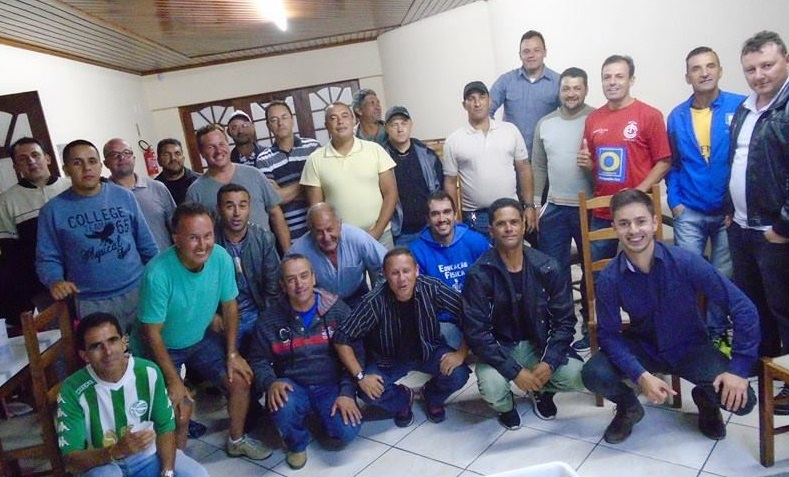

Esportes
Classificação do Amador após oito rodadas
Após os resultados da 8ª rodada do Campeonato Amador da LSF – COPA HONOLULU, ficou assim a classificação do certame, com três times com o mesmo número de pontos na liderança, sendo definido pelos critérios.
1º América – 18
2º Cristal – 18
3º Guarujá – 18
4º Amigos – 15
5º São José – 13
6º Kayuba – 12
7º Vila Mariza – 9
8º Figueirinha – 7
9º Mad. Pinheirinhos – 5
10º Vila Maria – 1
11º Inter Amigos – 0
Inter tem jogo importantíssimo nesta quarta-feira
Jogo importantíssimo para as pretensões coloradas em permanecer na principal divisão do Catarinense nesta quarta-feira às 21:45h no Estádio Vidal Ramos Junior contra o Figueirense. Pois sua situação está complicada, com a proximidade da zona de rebaixamento, a equipe do técnico Joel Cornelli que hoje completa um mês sem vitórias terá que vencer para respirar na tabela. O Inter está em 7º na classificação geral juntamente com o Tubarão, mas apenas 3 pontos na frente dos dois últimos colocados: Almirante Barroso e Metropolitano que tem 9 pontos na classificação geral. Portanto, vamos comparecer ao Tio Vida e empurrar o Leão Baio para uma vitória que nos afasta do fantasma do rebaixamento.

Arbitragem faz churrasco para confraternizar
Pessoal do quadro de árbitros da Associação de Arbitragem do Planalto Serrano fizeram sábado à noite no Clube Caça e Tiro um belo churrasco de confraternização. Antes teve uma reunião com o diretor Láli e mais 27 presentes, expondo sobre competições que estão em andamento como Amador, Urubici e Caça e Tiro e também que estão por vir como: JOCOL, Regional, São Joaquim, Campo Belo do Sul e Anita Garibaldi. Também repassado algumas orientações de comportamento e aparência e em seguida muitas estórias, causos e aquela alcatra ao capricho pelo nosso assador oficial Celso Aurélio.

Jones Minosso foi palco de mais uma abertura do JOCOL
Sábado à noite o Ginásio Jones Minosso foi palco da abertura oficial dos Jogos Comunitários de Lages-JOCOL, com desfile das 98 equipes inscritas sendo 84 do futebol. Estiveram presentes o Governador Raimundo Colombo, o prefeito Antônio Ceron, o vice prefeito Juliano Polese, o superintendente Nilson Cruz, a Deputada Carmem Zanotto e Armando Mello, para uma cerimônia bonita e bem organizada pela equipe da FME coordenada pelo Dito. Tivemos apresentações de danças da APAE, do Dançar Passarela e também do pessoal da capoeira. Os três troféus da classificação geral levam os nomes de: 1º Andréia dos Santos (Maicon) nossa atleta que participou de 3 olimpíadas e tem duas medalhas de prata. 2º Eduardo Antunes de Castro, o xerife do Morro do Posto, ex-jogador do Inter de Lages nos anos 70/80 e 3º Dr. Clóvis Arruda Vieira atual médico do Inter. A chama olímpica foi carregada por três personalidades do esporte: Fabrício Mattos professor de Educação física da APAE e artilheiro da série A do JOCOL 2016, após passou para Tio Hélio (Hélio Lenor Koch) e por fim Antônio Clodoaldo Souza Chaves o Caio levou a tocha até a pira oficializando a abertura. A lamentar o público presente, que a cada ano que passa esta ficando menor.
Amador já está na 8ª rodada
Pela 8ª rodada do Campeonato Amador organizado pela Liga Serrana de Futebol tivemos mais 5 jogos disputados. Lamentar as agressões entre atletas do Figueirinha e Amigos no domingo a tarde no Campo do Amador, com jogo sendo encerrado aos 35 minutos do 1º tempo.
RESULTADOS:
Vila Mariza 15h – América 5 x 0 Vila Maria – árbitro Zelão
Amador sábado 14h – São José 3 x 2 Kayuba – árbitro Zico
Amador sábado 16h – Guarujá 2 x 0 Vila Mariza – árbitro Toni
Amador domingo 10h – Cristal 1 x 0 Inter Amigos – árbitro Nílton
Amador domingo 15h – Amigos 1 x 0 Figueirinha – árbitro Ricardo
Chelsea do Tio Zé lidera certame do Santa Helena
Mais uma rodada do campeonato do bairro Santa Helena, muito bem organizado e arbitrado pelo Adílson. Tivemos os seguintes resultados:
União 1 x 0 Santa Helena
Chelsea 1 x o GER Vila Comboni
Barra Azul 4 x 4 Santos
Classificação:
1º Chelsea e União – 16
4º Fabris e Barra Azul – 15
5º Santos – 14
6º GER Vila Comboni – 11
7º Santa Helena – 08
Resultados de Urubici
Pelo Campeonato Inter Municipal de Urubici, que leva o nome do saudoso Olindo Dircksen, conta com a participação de duas equipes de São Joaquim: Cruzeiro e Assoc. Quilmes e duas de Rio Rufino: Jacutinga e Rio Rufino.
Resultados da 7ª Rodada:
Domingo 14h – AssOC. Quilmes 1 x 2 RB multimarcas – árbitro Alceu Schumacker
Domingo 16h – Santa Tereza 3 x 1 Rio Rufino – árbitro Maikon carneiro

Inter perde em Itajai
O nosso Inter jogando hoje às 10h da manhã no Estádio Camilo Mussi (gramado sintético) na cidade de Itajai, foi derrotado por 2 a 1 para o time do Almirante Barroso, gols de Jeferson Paulista e Safira descontando Paulo Victor para o Leão Baio. Arbitragem de Héber Roberto Lopes. Esta derrota complica o Inter na classificação do turno, está em sétimo com apenas um ponto, já na classificação geral está apenas três pontos da zona de rebaixamento. Terá jogo chave nesta 4ª feira às 21:45 no Tio Vida contra o Figueirense, vamos prestigiar.
Real Madrid é campeão do campeonato do Centenário
Domingo de festa pra numerosa torcida do Real Madrid do Morro Grande, que compareceu para torcer pelo seu time na final do campeonato do bairro Centenário e de goleada deu Real Madrid 4 x 0 Centenário, para alegria de Sérgio Pedroso já que foi vice em 2016. O troféu levou o nome do saudoso desportista Nélson Santana. Muito boa a arbitragem do trio: Zelão, Zico e Robert. Os artilheiros foram Belo do LDU e Macalé do Centenário com 7 gols cada, já o goleiro menos vazado foi Alisson e Dani que revessaram no gol do centenário e levaram só 7 gols, 4 só na final. O terceiro colocado foi a LDU que venceu por 4 a 2 ao Independente. Parabéns ao Mano que com auxílio do Lucimar e Lucas Pires realizaram uma excelente organização e pelo grande público presente com paz e esportividade.